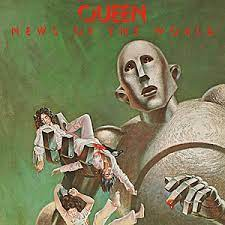

News Of The World
"News Of The World" este al șaselea album de studio al trupei Queen , lansat în 1977 unde regasim clasicele "We Will Rock You", "My Melancholy Blues" si "We Are The Champions".
"News Of The World" este al șaselea album de studio al trupei Queen , lansat în 1977 unde regasim clasicele "We Will Rock You", "My Melancholy Blues" si "We Are The Champions".